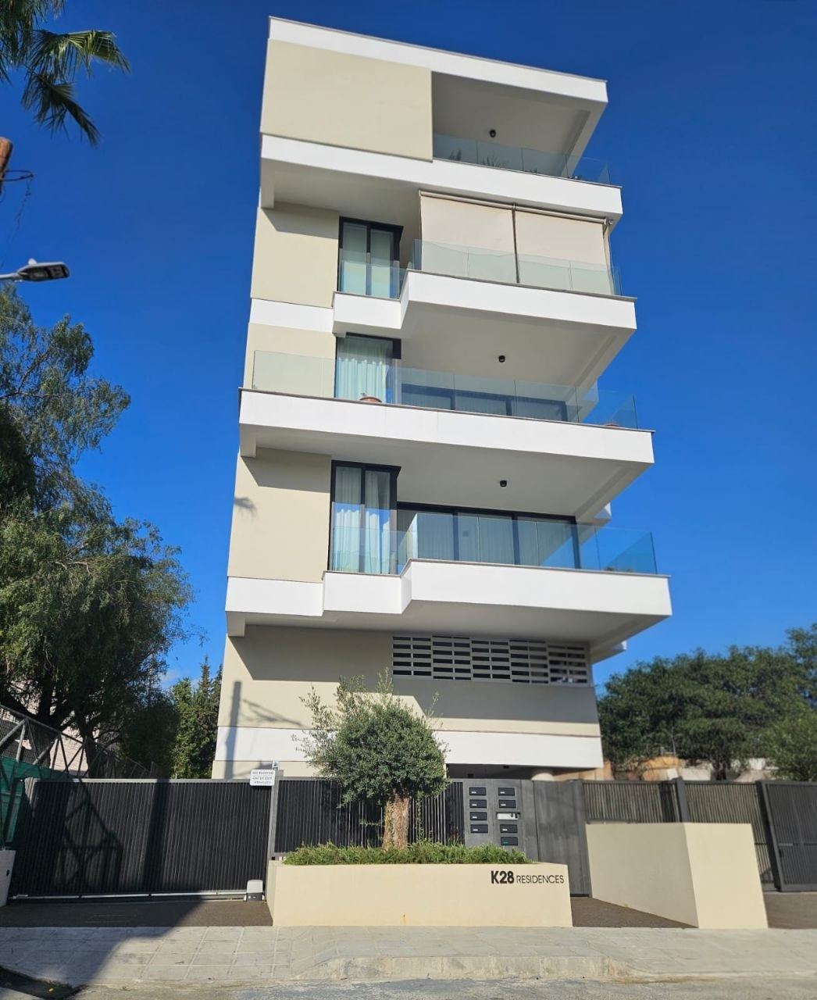
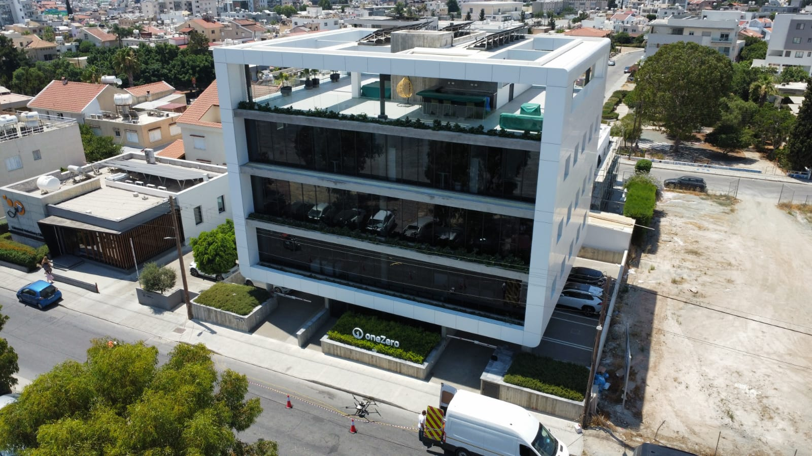
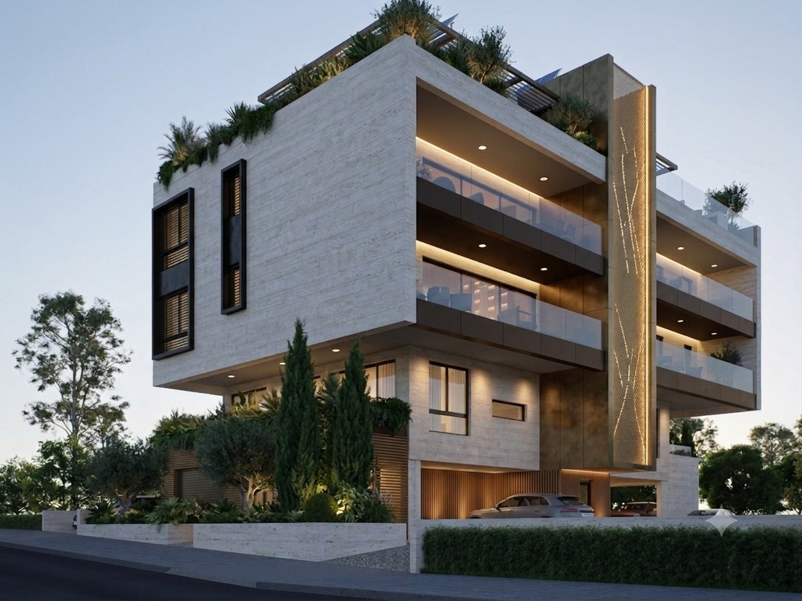
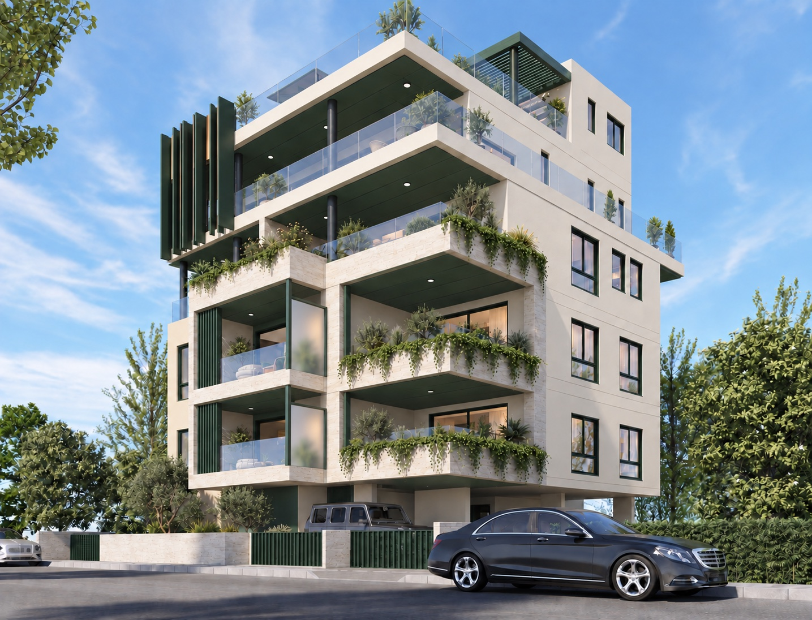
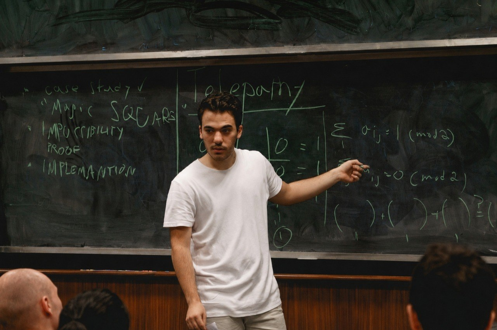
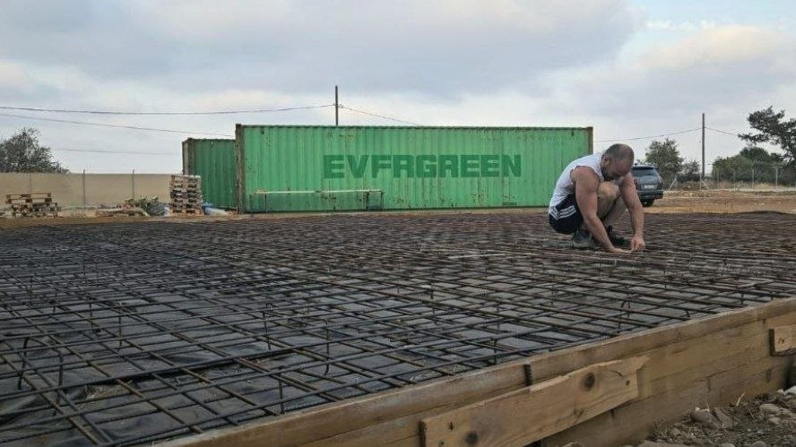

01
K28 Residences
Kapsalos, Limassol
Completed 2025

Property development
Automated construction
Precision robotics and human-centered architecture, working in tandem to deliver homes faster, tighter, and built to last.
Explore our projects01 — Projects
Four developments, one method — robotic precision paired with thorough design.

Kapsalos, Limassol

Kato Polemidia, Limassol

Panthea, Limassol

Agios Nektarios, Limassol
02 — About
The early days of Deep Learning had attracted numerous theoretical physicists and I was one of them. After a couple years of setting up AI infrastructure for myself I started Petaparsec in 2019 to do just that for others. It was at that moment that I knew we could not only make infrastructure for AI but also use AI to make infrastructure.
I believed that AI had more value to deliver in the physical world than in the software. I returned to Cyprus and bought an industrial plot to begin experimenting with contact rich robotics using custom actuators. I got a hands on understanding of the construction process while building this workshop and began to make the connections between robotics and its practical use on the worksite.
We don't build with experience, we build from first principles. Thinking out of the box and taking a fresh look at the entire industry.
Our mission is to build until we approach the limits of what physics allows. I am pretty sure it allows us to make life much better on this planet and take it to others too. Your support or affiliation to this company is contributing towards that cause.


03 — Technology
Three stages, one pipeline — from engineering drawing to finished facade.
Generative AI reads every engineering plan and folds the details into a living digital twin — a working model we use to optimize the build before ground is broken.
That twin drives our factory floor. Electrical cabinets, cable runs — the repetitive, precision-heavy work — get industrialized off-site, built to a quality a job site can't match.
On site, robots do the rest: faster structural work, tighter tolerances. They even clean our facades — like the drone shown in the video above.
04 — Contact